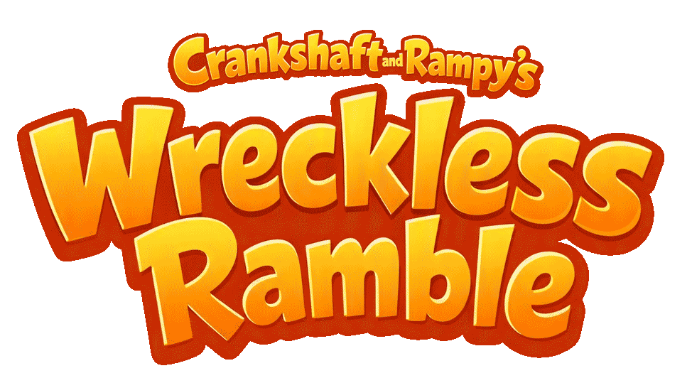

| Keyboard / Mouse | What it does | Xbox controller |
|---|---|---|
| Driving | ||
| W or ↑ | Accelerate — drive forward | RT (right trigger) or ↑ on the D-pad |
| S or ↓ | Brake, then reverse | LT (left trigger) or ↓ on the D-pad |
| A or ← | Steer left | Left stick ← or D-pad ← |
| D or → | Steer right | Left stick → or D-pad → |
| Shift (hold) | 2× boost — double acceleration and top speed, forward or reverse | Hold X |
| Camera | ||
| Drag with the mouse | Orbit the camera around the car | Right stick |
| Scroll wheel | Zoom the camera in / out | LB zooms in · RB zooms out |
| C | Switch between chase camera and top-down view | B |
| Game | ||
| Space | Pause / unpause the whole world | Start |
| H | Sound the horn | A |
| B | Bookmark where you are — writes level and coordinates into the address bar | Right-stick click (R3) |
| This settings screen | ||
| Click the ⚙ gear | Open / close settings | View / Back button |
| Click a tab | Switch between Player, Chase, Levels, Controls, Graphics and About | LB / RB |
| ← / → | Previous / next car on the Player and Chase tabs | D-pad ← / → or left stick |
| Click a level, object or button | Pick whatever is on screen (travel to a level, open a category…) | D-pad ↑ / ↓ to highlight, A to pick |
| Click the spinning car, or Enter | Drive the car on show and go back to the game | A |
| Esc | Close settings without changing anything | B |
| On touch screens: drag the joystick to drive, drag the world to orbit the camera, and pinch to zoom. | ||